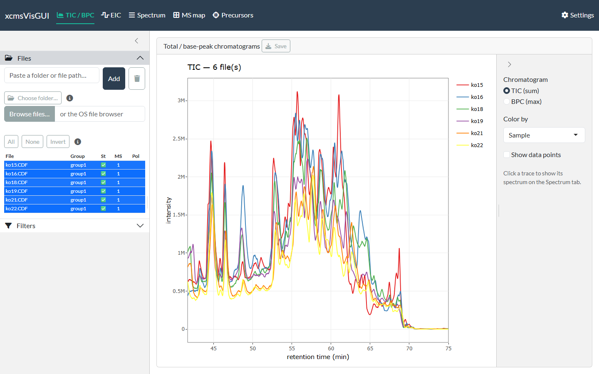

A local Shiny desktop app for interactively visualising raw LC-MS data on the RforMassSpectrometry stack (Spectra / MsExperiment / xcms) — TIC/BPC, extracted-ion chromatograms, spectra with adduct / isotope / fragment annotation, 2D/3D maps, and DDA precursors. Plots are ggplot2 rendered through plotly (click, zoom, hover); static export is via ggsave. Scope is raw visualisation only — no peak picking, grouping or alignment.

Install
xcmsVisGUI depends on Bioconductor packages and on the GitHub-only commonMZ, so install with a tool that resolves both. The easiest is pak:
# install.packages("pak")
pak::pak("stanstrup/xcmsVisGUI")Or with remotes + BiocManager (point at the Bioconductor repos first so the Bioc dependencies resolve):
# install.packages(c("remotes", "BiocManager"))
options(repos = BiocManager::repositories())
remotes::install_github("stanstrup/xcmsVisGUI")Run
xcmsVisGUI::run_app()A browser tab opens with the plot views across the top (TIC/BPC, EIC, Spectrum, MS map, Precursors), a Settings page, and a left sidebar with Files and Filters. Paste a folder of .mzML / .mzXML / .CDF files into the Files box to begin.
Documentation
Full guides live on the package website:
- Getting started — loading files, filtering, settings, export, and moving between tabs
- TIC / BPC
- EIC
- Spectrum — single spectra, the scan-list browser, and annotation
- MS map
- Precursors
- Developer guide — status, running from a clone, tests, renv, and the project layout
Deploy with Docker
A Dockerfile (based on the Bioconductor image) runs the app as a server:
Open http://localhost:3838 and paste /data (your mounted files) into the Files box. Mount a volume at /root/.config/R to persist settings across restarts.
License
MIT © Jan Stanstrup. See LICENSE.md.